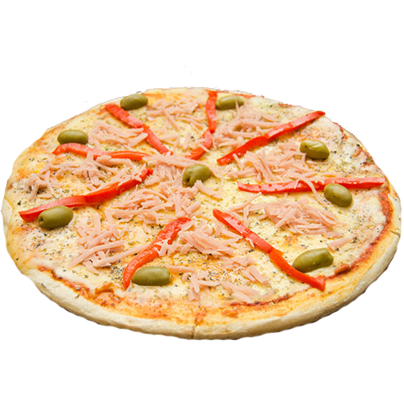

Pizza Dough

Ingredients (Ferment)
- 50g all-purpose flour
- 75ml of water
- 15g frest yeast
- 1 teaspoon sugar.
Ingredients
- 200g all-purpose flour
- 2 tablespoon of sunflower oil
- 50 ml water
- 1/2 teaspoon Salt
Steps
- In a bowl make the sponge, adding: flour, water, sugar and
- Add the rice and a pinch of salt
- Cook the rice until it is soft, then remove the pot from the heat and strain the rice.
- Let the rice cool down and add the cheese
- Enjoy!
Paso 1
En un bowl aparte hacer la esponja, añadiendo los ingredientes: Harina, agua, azúcar y levadura rompiendola suavemente. Integrar bien y taparlo con un film por 15m. Esto también te ayuda a saber si tu levadura está fresca o no.
Paso 2
En la mesada hacer una corona poniendo la harina y alrededor la sal. En el medio añadir de a poco el agua, el fermento y las 2 cucharadas de aceite. Integramos desde el centro y luego de amasar unos minutos formar el bollo.
Paso 3
Poner en un bowl con un poco de aceite y tapar por media hora o hasta que duplique su volumen. Desgasificar suavemente y poner en una fuente a un horno precalentado a 210/250¬∞ y listo üçïüòã. (Despu√©s de dorarse a√±adir salsa, queso etc).
Back to main menu.